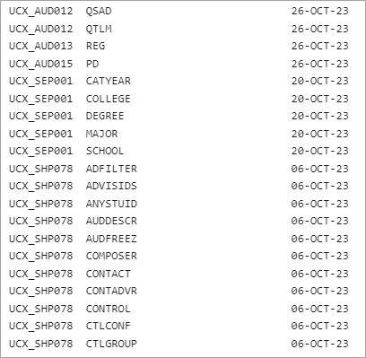

Transit Jobs
AUD01 - List unhooked and unenforced exceptions
The AUD01 report shows all unhooked and all unenforced exceptions.
Access to run AUD01 in Transit is granted with the TRAUD01 Shepherd key.
It is suggested that this report be run on a regular basis to identify if exceptions have become unhooked. However, if you use label-tags on all of your labels exceptions should rarely become unhooked. See the Label Tags topic for more information.
After running this report, you might consider running SYS01 - View orphaned unhooked and unenforced exceptions (vieworphaned) in Transit. This allows you to view the list of orphaned unhooked and unenforced exceptions, which is a subset of the list produced by AUD01. You may then choose to run the SYS02 - Delete orphaned unhooked/unenforced exceptions (deleteorphaned) processor to remove those that are no longer associated with a student’s goal.
For example:
Unhooked exceptions
6789 RR BS RA000112 UN testing the RR except BH
6789 FC BS RA000112 UN testing fop exceptions
1633092319 FC BA RA000112 UN Force complete this rule
1646953703 FC BA RA000235 UN force complete
1960 RR BS RA000263 UN Replace MATH 1305 with BUS 2397
1493208187 NN BS RA000515 UN REM CIS3281 AND REQ 2 CLAS NOT 1
1493208187 AH BS RA000515 UN apply hist 3500 from elec
1493208187 AA BS RA000515 UN allow psyc 1100 wth 5 cre, stu has 4 cred in elec
1493208187 FC BS RA000515 UN testing force complete
1493208187 RR BS RA000515 UN replace cs 3660 w/ engl3003 from electives
001234 FC BS RA000515 UN Force complete this rule
001234 FC BS RA000515 UN Force complete this rule
Unenforced exceptions
6789 RR BS RA000112 R2 Test--replace COMM 1000 with ART 1020
1969 AA BS RA000901 R2 Allow hist 3400 to apply here.
B123456 NN BA RA001363 R2 testing 1-3H96G8
B123456 FC BA RA001363 R2 Macroecon course taken in high school
B003 FC BA RA001399 R2 Please force this rule complete – per Stephen'sAUD02 - Delete audits
With the AUD02 processor, you can delete audits created on or before a certain date.
The primary use of the AUD02 is to clean out certain frozen or non-frozen audits periodically. You can delete frozen audits by specifying a freeze-type, or you can delete non-frozen audits. In either case, an audit date is required so you are deleting only audits created on or before that date.
- Because this job allows you to delete all audits, ensure that only a handful of trusted users has access.
- When deleting all non-frozen audits, be sure to choose an audit date value that does not delete audits that are still needed.
BAN62 - Satisfactory Academic Progress Processor
BAN62 populates the Banner tables SHRSAPP and SHRSARJ with Degree Works audit results.
Access to run BAN62 in Transit is granted with the TRBAN62 Shepherd key.
The run-time questions for BAN62 are:
- Refresh data from Banner before running audits. - when selected, the student data refreshes from Banner before a new degree audit is processed.
- Select Level - the selected pool of students are filtered to the School Level (Banner Level) selected in the picklist.
- Include In-progress classes? - in-progress classes are included in the newly generated audit.
- Include Preregistered classes? - preregistered classes are included in the newly generated audit.
- Freeze these new audits? - the newly generated audits can be frozen with SAPFRZ, a new freeze type.
- Audit Description - it is optional to include a freeze description, but Ellucian recommends that when running BAN62 the associated audits are kept for reference.
- Select Term - the current term in which the user is running the BAN62 processor. This term value is written to the SHRSAPP_TERM_CODE_EVAL column in Banner. This is a required field that reflects the term for which academic progress is being evaluated.
BAN62 worker count configuration
- transit.ban62.workerCount - set to specify how many parallel processes should be used to generate the SAP portion of BAN62. When launched from Transit, the BAN62 job runs multiple BAN62 processes in parallel against the selected list of student IDs. Running multiple processes typically improves throughput but also increases resource usage. Setting the worker count too high may lead to performance degradation, so Ellucian recommends tuning this value based on the capacity of your system.
- Create new audit - select for the transit.dap22.workerCount setting to determine how many processes to use to generate new audits as part of BAN62.
For more information, see the Satisfactory academic progress topic.
DAP16 - Parse Requirements Processor
DAP16 parses all blocks in the database and updates the dap-req-crs-dtl, dap-req-link-dtl and dap-result-dtl tables.
Access to run DAP16 in Transit is granted with the TRDAP16 Shepherd key.
DAP16 processes all blocks (dap_req_block) found in the database. Each block is reparsed and the dap-req-crs-dtl, dap-req-link-dtl and dap-result-dtl tables are updated. In addition, the syntax and remarks trees in the daptrees directory are replaced. If any errors were found during the parsing phase, the parse status is updated with “NO”; if no errors were found the status value is set to “OK”.
DAP16 can also be run from the host prompt using the “dap16all” script if needed. In addition, a subset of blocks can be run by setting the DAP36_CRITERIA variable to choose only the blocks you want. You may also override the default order-by clause, for example:
$ export DAP36_CRITERIA=”dap_block_type = ‘MAJOR’ ”
$ export DAP36_ORDER_BY=”dap_block_title”
$ dap16allThe default order-by used by DAP16 is: dap_block_type, dap_block_value, dap_cat_yr_start, dap_cat_yr_stop.
For each block that DAP16 parses a line will appear in the log file showing the block type, value, cat-yrs, req-id and parse status. For example:
Type Value Catalog Years ID Status
COLLEGE SCI 19941995 :99999999 RA001267 Parsed okay
COLLEGE SCI 20042005 :99999999 RA001269 Parsed okay
COLLEGE SCI 20102011 :99999999 RA001268 Parsed okay
CONC ACCT 19941995 :19951996 RA000600 Parsed with errors
CONC ACCT 19961997 :19992000 RA000203 Parsed okay
CONC ACCT 20002001 :20022003 RA000506 Parsed okayWhen DAP16 is done, a summary line will be shown in the log file:
Blocks that Parsed Without Errors: 794
Blocks that Parsed With Errors: 134
Total Requirement Blocks Parsed: 928When DAP16 is finished, the dap16action script will run and create a list of all the blocks in the database that have a NO parse status. In addition, the same summary line shown in the log file will appear in the action file. Both the action file and log file can be viewed in Transit.
To view and fix the parse errors Scribe should be used. In Scribe you should search on blocks with parse errors and fix each block one by one.
- parser.batch.notifications.toEmail
- transit.dap16.workerCount
DAP22 - Generate Audits
DAP22 generates Degree Works audits in batch.
Access to run DAP22 in Transit is granted with the TRDAP22 Shepherd key.
Students accessing Degree Works from the Responsive Dashboard may not have the capability to run new audits. Instead, they view the most recent audit stored for them in the Degree Works database. For this reason, the Degree Works database must contain an audit for every active student. Registrar and Advisors typically can run new audits, but these audits are performed for one student at a time. The DAP22 processor will run audits in batch, which means it can produce an audit for every student, for every active student or for a group of students selected by some criteria. However, it is rare you will need to do this from Transit because batch audits are run after RAD11 completes, meaning you should have updated audits for your students as their data changes.
Typically when DAP22 is run, the option to create a new audit is selected. However, DAP22 can be run without generating a new audit just to generate PDF or XML output from the students' most recent audit by not selecting the Create new audit check box. Note that in this scenario, if the core.audit.process.runOnScribeChanges.enabled Shepherd setting is true, the auditor engine will check to see if any changes were made to the Scribe blocks in the student's audit after the last audit was generated. A new audit will be run if changes are detected.
Set the transit.dap22.workerCount setting to tell DAP22 how many processes should be used to run the audits. The DAP22 job is launched from Transit, and after RAD11 completes, will run multiple DAP22 processes in parallel against the list of student IDs selected. Running multiple processes should result in better throughput, but will also consume more resources than running a single DAP22. If your workerCount is too high, the job may also run slower than if the workerCount was a smaller number. If you select the Create PDF file or raw XML output types in Transit, the DAP22 job will run only one dap22 process regardless of the workerCount value.
When running new audits, creating output, or building CPA results records, be sure you chose the correct audit type. Normally you will want this set to Academic Audit, but if you want to generate financial aid audits, you can set the audit type to Financial Aid Audit. You must specify an aid term when running a financial aid audit, however.
Users can create PDF files of student audits in batch with DAP22. When they select Create PDF file as the job output, they are prompted for the page dimensions, language properties, audit report, and custom data filter to be used when generating the audit PDF. The page dimensions drop-down list contains values from SYS100, while the values in the language properties locale drop-down list come from SHP080.
The following report formats will appear in the Select audit report drop-down list when you select Create PDF file as the output format for DAP22:
- RPT30 – Registrar Report
- RPT31 – Student View
- RPT33 – Graduation Checklist
- RPT36 – Registration Checklist
- RPT50 – Financial Aid Report
- RPT51 – Aid and Academic Report
- RPT55 – Athletic Eligibility Report
- RPT56 – Athletic and Academic Report
The flags in UCX-RPT036 for these reports determine how audit data will be displayed in that particular format. Depending on the report you chose, you can create either a PDF file of audits or a raw XML file that you can process with your own tools later.
The Select sort drop-down determines how the audits should be sorted in the output file.
Report outputs
| Output | Output action | Description |
|---|---|---|
| Create PDF file | When PDF is specified, a .pdf file is created using the report format selected from UCX-RPT036. The PDF is created as an artifact for the job on the Completed Jobs tab. When you download the PDF from Transit, the PDF name is formatted as JJJ_dap22NNNP.pdf, where JJJ is the job number and NNN is a unique identifier. When the Create individual output option is checked, the files are placed in a compressed file and available in Transit as an artifact of the job on the Completed Jobs tab. The compressed file name is formatted as JNNN_students.zip, where NNN is the job number. Within the compressed file, each PDF file is named student_<id>_<school>_<degree>.pdf Example: student_123456_UG_BS.pdf Note: The naming convention of the PDF file can be changed using the transit.dapXX.fileFormat setting. Each job that generates an audit has its own setting.
|
|
| XML | Create raw xml | The XML file created is created in Transit as an artifact of the job on the Completed Jobs tab. You can use this raw XML as input to one of your own tools as needed. When you download the XML file from Transit, the name is formatted as J<NNN>_students.xml; where NNN is the job number. The option to Create individual output files is not available when selecting XML as the output type. |
DAP24 - Generate Audit PDFs
DAP24 generates PDF audits from a file of audit IDs. The job creates a zip file of PDFs that you can download from Transit.
Access to run DAP24 in Transit is granted with the TRDAP24 Shepherd key.
This job allows you to create individual PDF files for any existing audits. You supply a text file of audit IDs, with each audit ID on a line by itself. You may want to archive the PDFs for a set of frozen audits or create PDFs for athletes on the volleyball team, for example.
You are prompted for the page dimensions and the language properties locale to be used when generating the audit output. The page dimensions drop-down is populated with values from SYS100, while the language properties locale drop-down is populated with values from SHP080.
You must also select the user class from the Custom data filter field. This value determines which values should appear in the student header based on the core.audit.printView.studentHeader.custom.items settings, where you might have settings set up for different user classes. The field should be set based on the audience for the output. Choosing the Student option is the safest to ensure only the basic student header information appears in the output. Internal notes will not be visible on PDFs generated by DAP24.
Set the transit.dap24.workerCount setting to tell DAP24 how many processes should be used to generate the PDFs. The DAP24 job launched from Transit will run multiple DAP24 processes in parallel against the list of audit IDs selected. Running multiple processes should result in better throughput, but will also consume more resources than running a single DAP24. If your workerCount is too high, the job may also run slower than if the workerCount is a smaller number.
The following report formats will appear in the Select audit report drop-down list when you select Create PDF file as the output format for DAP24:
- RPT30 – Registrar Report
- RPT31 – Student View
- RPT33 – Graduation Checklist
- RPT36 – Registration Checklist
- RPT50 – Financial Aid Report
- RPT51 – Aid and Academic Report
- RPT55 – Athletic Eligibility Report
- RPT56 – Athletic and Academic Report
The flags in UCX-RPT036 for these reports determine how audit data will be displayed in that particular format.
When the report runs, the files are placed in a compressed file and available in Transit as an artifact of the job on the Completed Jobs tab. The compressed file name is formatted as JNNN_audits.zip, where NNN is the job number. Within the compressed file, each PDF file is named audit_<auditid>_<studentid>_<degree>_<school>_<name>.pdf. For example, audit_123456_UG_BS_Smith_John.pdf.
DAP26 - Generate Audit XML files
DAP26 generates audits in an XML format from a file of audit IDs. The job creates a zip file of the audits that you can download from Transit.
Access to run DAP26 in Transit is granted with the TRDAP26 Shepherd key.
Before running the script against a full list of audits, start with a test using 10 audit IDs in a file. Make sure the files are created without errors, and verify their sizes. Based on this test, you can estimate the required free space on the system when processing the full list.
You can run simultaneous DAP26 processes to take advantage of the multiple processors you have on your machine. Use the transit.dap26.workerCount setting to define the number of processes DAP26 should use to run the audits. When launched from Transit, the DAP26 job runs multiple DAP26 processes in parallel, improving throughput but also increasing consumption if you have more than one CPU on your system. If your workerCount is too high, the job may also run slower than if the workerCount was a smaller number.
The DAP26 log file shows what the transit.dap26.workerCount is set to in addition to the format specified in the transit.dap26.fileFormat and how many audits have been successfully retrieved. For example:
===== DAP26 Worker Count = 10
===== DAP26 File Format = audit_<auditid>_<studentid>_<degree>_<school>
===== Number of auditIds in dap26.audits: 4
===== Creating XML file for FA00008V
===== Creating XML file for FA00008X
===== Creating XML file for FA00008Y
===== Creating XML file for FA00008c
===== Compressing XML files into dap26_audits.zip
===== File dap26_audits.zip created successfully inIf archiving frozen audits, first determine which ones to archive. Then, run a SQL query to export their IDs to a file. Be sure to specify the audit type—Academic Audits (AA), Athletic Eligibility Audits (AE), or Financial Aid Audits (FA). For instance, you may want to run a query similar to the following example to get the list of audit IDs to archive. Refer to UCX-AUD032 for a list of freeze-type values.
select dap_audit_id from dap_audit_dtl
where dap_freeze_type='FRZTYP' and dap_audit_type='AA'
order by dap_audit_idAfter the report runs, the XML files are compressed and stored in Transit as an artifact of the job on the Completed Jobs tab as audits.zip. When downloaded, the compressed file name is formatted as JNNN_audits.zip, where NNN is the job number. Within the compressed file, each xml file is named audit_<auditid>_<studentid>_<degree>_<school>.xml. For example, audit_AA000Pwx_123456_UG_BS.xml.
DAP27 - What-if Audits
DAP27 generates what-if audits on a set of selected students in batch.
Access to run DAP27 in Transit is granted with the TRDAP27 Shepherd key.
You may want to generate what-if audits to determine if some students have completed a certificate or have completed another program.
You must select the Catalog Year, Level, and Degree. You can then select at most one of each of the following: program, college, major, minor, concentration, specialization, and liberal learning. Because of this, you cannot run audits for double-majors, for example.
If you choose to freeze the audits you will be guaranteed that they will remain in the database until you choose to delete them. (See the notes below on deleting frozen audits.) This allows you to view the audits using the View historic drop-down on the What-If tab or to run SQL against the DAP_AUDIT_DTL to examine the high-level results. (See the notes below on running SQL against the audit results.) If you do not freeze the audits it is possible the audits will get deleted before you get a chance to review them. Ellucian recommends that you set up a least one freeze type in AUD032 to be used for these batch what-if audits. You may choose to freeze all of these audits using a freeze type of WHATIF or you may setup different codes for the different what-if batches you will be running.
Instead of, or in addition to, freezing the audits, you can create a PDF file. Review the notes under DAP22 about printing and creating a PDF.
The DAP27 log file shows a line for each student processed, much like DAP22. The log file shows you how complete the audit is for each student. In the following example, you can see that one student is 100% complete with the requirements for the BUS_CERT degree, while the other two students still have some work to do in their degrees. You may want to copy and paste this information into Excel and pull out just those students who are close to completion.
Processing student 19719874: UG/BUS_CERT... - 71% complete
Processing student 19843213: UG/BUS_CERT... - 100% complete
Processing student 82347211: UG/BUS_CERT... - 93% completeNote that the majors are pulled from AUD027 instead of STU023 and that the minors are pulled from AUD029 instead of STU024.
Frozen audit removal
If you chose to freeze the audits you can delete them using the freeze type you specified. The easiest way to do this is to use AUD02 in Transit. This processor allows you to delete all audits created before a specified date with the freeze type you used. For this reason, you should consider if using a single freeze type of WHATIF is sufficient or if you need to create several different freeze types for the different batches you will be running.
Note that the DAP_AUDIT_PCT (audit percent complete) field is a CHAR field and will contain values such as 0037, 0098, 0100. Please keep this in mind when trying to select on specific values and using greater-than and less-than. It might be best to export this information to Excel and use the tools in Excel to format/filter/etc as needed.
The CPA DAP_RESULT_DTL records are not generated as part of DAP27 so you cannot query the details of the audit results. The details of the audit are stored in the DAP_AUDIT_TREE, but this table cannot be queried because the data within is all binary.
Review and configure the transit.dap27.workerCount Shepherd setting.
Report outputs
| Output | Output action | Description |
|---|---|---|
| Create PDF file | When PDF is specified, a .pdf file is created using the report format selected from UCX-RPT036. The PDF is created as an artifact for the job on the Completed Jobs tab. When you download the PDF from Transit, the PDF name is formatted as JJJ_dap22NNNP.pdf, where JJJ is the job number and NNN is a unique identifier. When the Create individual output option is checked, the files are placed in a compressed file and available in Transit as an artifact of the job on the Completed Jobs tab. The compressed file name is formatted as JNNN_students.zip, where NNN is the job number. Within the compressed file, each PDF file is named student_<id>_<school>_<degree>.pdf Example: student_123456_UG_BS.pdf Note: The naming convention of the PDF file can be changed using the transit.dapXX.fileFormat setting. Each job that generates an audit has its own setting.
|
|
| XML | Create raw xml | The XML file created is created in Transit as an artifact of the job on the Completed Jobs tab. You can use this raw XML as input to one of your own tools as needed. When you download the XML file from Transit, the name is formatted as J<NNN>_students.xml; where NNN is the job number. The option to Create individual output files is not available when selecting XML as the output type. |
DAP28 - Alternate What-if Audits
DAP28 generates what-if audits in batch on a set of selected students based on the alternate curriculum you have bridged for each student.
Access to run DAP28 in Transit is granted with the TRDAP28 Shepherd key.
You may have an alternate set of curriculum for a set of students for which you want to generate audits.
You can find the curriculum for each student by retrieving the alternate school, degree, and catalog year from the RAD_CUSTOM_DTL. Each of these items must have been bridged with the names specified. For each of the other goal values, you can bridge multiple majors, minors, and so on by specifying a number after each. For example, A-MAJOR1 could be bridge for CHEM, and A-MAJOR2 could be bridged for BIOL. See the following chart for more information about how to bridge catalog year values for each goal value.
You can choose to freeze the audits or create a PDF or XML file of the audits or both. If you choose to freeze the audits, you are guaranteed they will remain in the database until you choose to delete them. This allows you to view the audits in the Responsive Dashboard on the What-if tab. If you do not freeze the audits, it is possible the audits will get deleted before you get a chance to review them. Ellucian recommends that you set up a least one freeze type in UCX-AUD032 to be used for these batch what-if audits. You may choose to freeze all of these audits using a freeze type of WIFALT, or you can set up different codes for the different what-if batches you will be running.
The DAP27 log file shows a line for each student processed, much like DAP22. The log file shows you how complete the audit is for each student. In the following example, you can see that one student is 100% complete with the requirements for the UG/BA degree, while the other two students still have some work to do in their degrees. You may want to copy and paste this information into Excel and pull out just those students who are close to completion.
Processing student 19719874: UG/BS ... - 71% complete
Processing student 19843213: UG/BA ... - 100% complete
Processing student 82347211: GR/MBA ... - 93% completeFor Banner schools, one use is to bridge the outcome curricula as custom records. You would then essentially be running what-if audits on the outcome records. You may want to create a UCX-AUD032 freeze type of WIFOUT or OUTCOM to help you better identify these audits.
You must bridge the alternate curricula to the RAD_CUSTOM_DTL by using the method appropriate for your student extract. Banner schools must set up UCX-BAN080 records. Other schools must create BIF records as needed using the R121CUST record layouts.
| Custom code | Meaning | Example code and value |
|---|---|---|
| A-SCHOOL | School (aka Level) | A-SCHOOL=UG |
| A-DEGREE | Degree | A-DEGREE=BS |
| A-CATYEAR | Overall Catalog Year | A-CATYEAR=2014 |
| A-PROGRAMx | xth Program – x is 1, 2, 3, and so on | A-PROGRAM1=BS_CHEM |
| A-PROGRAMxCY | xth Program Catalog Year | A-PROGRAM1CY=2015 |
| A-MAJORx | xth Major – x is 1, 2, 3, and so on | A-MAJOR1=CHEM |
| A-MAJORxCY | xth Major Catalog Year | A-MAJOR1CY=2013 |
The same codes are supported for COLLEGE, MINOR, CONC, SPEC, and LIBL, following the pattern you see above for PROGRAM and MAJOR.
The CY catalog year code and value are optional for any given goal. If it is not found, the overall catalog year value is used when determining the correct Scribe block to use for the given goal code.
For Banner schools, if your school is using the Program-as-degree feature, you would instead bridge the program code (for example, BA_HIST) as the A-DEGREE and optionally bridge the degree code (for example, BA) as A-PROGRAM1.
Frozen audit removal
If you chose to freeze the audits, you can delete them using the freeze type you specified. The easiest way to delete frozen audits is to use AUD02 in Transit. This processor allows you to delete all audits created before a specified date with the freeze type you used. For this reason, you should consider if using a single freeze type of WIFALT is sufficient or if you need to create several different freeze types for the different batches you will be running.
Report outputs
| Output | Output action | Description |
|---|---|---|
| Create PDF file | When PDF is specified, a .pdf file is created using the report format selected from UCX-RPT036. The PDF is created as an artifact for the job on the Completed Jobs tab. When you download the PDF from Transit, the PDF name is formatted as JJJ_dap22NNNP.pdf, where JJJ is the job number and NNN is a unique identifier. When the Create individual output option is checked, the files are placed in a compressed file and available in Transit as an artifact of the job on the Completed Jobs tab. The compressed file name is formatted as JNNN_students.zip, where NNN is the job number. Within the compressed file, each PDF file is named student_<id>_<school>_<degree>.pdf Example: student_123456_UG_BS.pdf Note: The naming convention of the PDF file can be changed using the transit.dapXX.fileFormat setting. Each job that generates an audit has its own setting.
|
|
| XML | Create raw xml | The XML file created is created in Transit as an artifact of the job on the Completed Jobs tab. You can use this raw XML as input to one of your own tools as needed. When you download the XML file from Transit, the name is formatted as J<NNN>_students.xml; where NNN is the job number. The option to Create individual output files is not available when selecting XML as the output type. |
DAP40 Unload Scribe Blocks
The DAP40 batch program unloads your Scribe blocks to a zip file that you can download from Transit.
Access to run DAP40 in Transit is granted with the TRDAP40 Shepherd key.
You can then use the DAP41 job to upload this file into a different environment. This allows you to move blocks from your test to production environment, for example.
There are no selection or sort choices, although you can restrict the output to certain types of blocks using the one question for the job:
When you select blocks to unload, your choices are:
- All blocks – unloads all blocks.
- All but Planner blocks (RA blocks) – Planner blocks (with block IDs starting with RB) are excluded.
- Only Planner blocks (RB blocks) – Only planner blocks are included.
DAP40 will extract the desired blocks, one per file, named with the block ID and a .text extension (for example, RA000291.text). The block metadata (for example, title, period) will be extracted into a separate file named with the block ID and an extension of .fields (for example, RA000291.fields). The job will also unload the DAP_NEXT_ID_MST table entries for the extracted blocks. They are named DWNXTRMST.dmp (for the RA next ID) and DWNXTRMST_P.dmp (for the RB next ID). All of the files will be zipped into one job artifact called dapblocks.zip. This file can then be downloaded to your local machine. The file may be quite large depending on the number and size of your blocks.
For more information about using DAP40 and DAP41 to manage blocks, see Blocks transfer between two different environments.
DAP40 errors, warnings, and success
The action file will normally contain only the start and end times and a count of the total number of blocks unloaded.
If there are errors, an error count and error messages will also show. The log file will show additional information related to the errors. These will usually be database errors that require a DBA to resolve.
DAP41 Load Scribe Blocks
The DAP41 batch program loads your Scribe blocks from a specified zip file that you upload to Transit.
Access to run DAP41 in Transit is granted with the TRDAP41 Shepherd key.
The zip file must have come from you running DAP40 to unload blocks from the same or another environment. This allows you to move blocks from your test to production environment, for example.
There are no selection or sort choices. The required questions prompt the user for the zip file containing the blocks to load and what type of blocks should be loaded.
DAP41 will check to see if zip file contains academic blocks, planner blocks, or both. The zip file may contain both types of blocks but you can specify to only load one type. However, if the zip file contains only one type of blocks and you specify you want to load the other set of blocks, the job output will show an error. Before the new blocks are loaded the existing academic and planner blocks are deleted from the database. The zip file should contain the complete set of blocks and not merely a subset for the given type. The blocks are then loaded from the .text and .fields files contained within the zip file. The DWNXTRMST.dmp (for the academic blocks) and DWNXTRMST_P.dmp (for the planner blocks) are then loaded into the dap_next_id_mst. This ensures that new blocks added in Scribe will start off with the next available block ID.
For more information about using DAP40 and DAP41 to manage blocks, see Blocks transfer between two different environments.
Ellucian recommends that you run DAP41 - Load Scribe Blocks at a time when users and jobs are not accessing Degree Works. Because the load job deletes all existing blocks before adding the new blocks, audits generated while DAP41 is running may fail due to missing blocks.
DAP41 errors, warnings, and success
The action file will normally contain just the start and end times and a count of the total number of blocks loaded.
If there are errors, an error count and error messages will also show. The log file will show additional information related to the errors. These will usually be database errors that require a DBA to resolve.
DAP42 Unload Mappings
The DAP42 batch program unloads your transfer mappings to a zip file that you can download from Transit.
Access to run DAP42 in Transit is granted with the TRDAP42 Shepherd key.
You can then use the DAP43 job to upload this file into a different environment. This allows you to move blocks from your test to production environment, for example.
There are no selection or sort choices for the job.
DAP42 will extract all mapping data from the DAP_MAPPING_DTL, DAP_MAP_COND_DTL, and DAP_MAP_ATTR_DTL. Each set of records is placed into a dmp file with the name of the table. The job will also unload the DAP_NEXT_ID_MST table M entry. All of the files will be zipped into one job artifact called mappingsunload.zip. This file can then be downloaded to your local machine. The file may be quite large depending on the number mappings.
For more information about using DAP42 and DAP43 to manage blocks, see Mappings transfer between two different environments.
DAP43 Load Mappings
The DAP43 batch program loads your mappings from a specified zip file that you upload to Transit.
Access to run DAP43 in Transit is granted with the TRDAP43 Shepherd key.
The zip file must have come from you running DAP42 to unload mappings from the same or another environment. Ensuring this allows you to move mappings from your test to production environment, for example.
There are no selection or sort choices. The required question prompts the user for the zip file containing the mappings to load.
Before the new mappings are loaded, the existing mappings are deleted from the database. The zip file should contain the complete set of mappings and not merely a subset. The mappings are then loaded from the dmp files contained within the zip file. The DAP_NEXT_ID_MST.dmp is then loaded into the dap_next_id_mst. This ensures that new mappings added will start off with the next available mapping ID.
For more information about using DAP42 and DAP43 to manage blocks, see Mappings transfer between two different environments.
DAP44 Unload UCX tables
The DAP44 batch program unloads your UCX tables to a zip file that you can download from Transit.
Access to run DAP44 in Transit is granted with the TRDAP44 Shepherd key.
You can then use the DAP45 job to upload the zip file into a different environment. This allows you to move UCX tables from your test to production environment, for example.
There are no selection or sort choices for the job.
DAP44 will unload each table listed in SYS001 into its own file with the name of the table. All of the files will be zipped into one job artifact called ucxunload.zip. This file can then be downloaded to your local machine. You can selectively decide to load certain UCX tables instead of all of them by editing the zip file and removing the tables you do not want loaded through DAP45. When editing the zip file, do not remove the SYS001 file or you will get an error when running DAP45.
For more information about using DAP44 and DAP45 to manage UCX tables, see UCX tables transfer between two different environments.
DAP45 Load UCX tables
The DAP45 batch program loads your UCX tables from a specified zip file that you upload to Transit.
Access to run DAP45 in Transit is granted with the TRDAP45 Shepherd key.
The zip file must have come from you running DAP44 to unload UCX tables from the same or another environment. This allows you to move UCX tables from your test to production environment, for example.
There are no selection or sort choices. The required question prompts the user for the zip file containing the UCX tables to load.
Each UCX table found in the zip file is loaded into its respective database table replacing the previous contents.
For more information about using DAP44 and DAP45 to manage UCX tables, see UCX tables transfer between two different environments.
DAP54 - Template processor plan creation
You can assign plans in a batch to students using DAP54 in Transit.
Access to run DAP54 in Transit is granted with the TRDAP54 Shepherd key.
You can specify the template that is to be used for all students in your pool or you may let the processor determine the best template for the student based on their curriculum. Note: If you use the template ID option, the template you specify must have a DEGREE tag (either optional or required). If there isn’t a DEGREE tag, plans will not be created for any student.
You must also select the starting term for the plans created because the template only specifies the term type – not the actual terms. If you do specify a template be sure the starting term you specify has the same term type as the first term type on the template.
For the students selected, you can create the plans as temporary ones. When the “Are these plans temporary” check box is selected, the plans that are created will have the sep_plan.create_what set to TEMPORARY.
If you encounter an “insufficient memory for the Java Runtime Environment to continue” error message, you may need to increase the memory allocation for DAP54. You can do this by increasing the DAP54_MAX_HEAP variable in dwenv.config.
The steps used to find an appropriate template for each student are as follows:
If the template is specified:
- The template specified will be retrieved from the database
- It is assumed that the template has a degree tag
- For each student, the student’s degree will be compared to the template degree to be sure they match
- If the degree on the template does not match the student’s degree, no plan is created
- If a student has multiple degrees, the degree matching the template will be chosen and saved on the new plan
If the template is not specified:
- Try to find a template based on all of the student's data (school, degree, major, minor, conc, etc.) This is done for each of the student’s degrees.
- If more than one matching template is found, the template with the most tags is chosen. If multiple templates have the most matching tags, then the majors on the matching templates are examined. The template for the primary major will be chosen. If multiple templates match as a result of multiple concentrations for a single major, then no template is selected.
- For example, a template with the student’s minor may be found and another with the student’s conc may be found. Because both are valid for the student, no decision can be made as to which to use.
- Another example, templates are found for CHEM and MATH majors. Because CHEM is the student’s primary major, that template is selected.
- Another example, templates are found for the VIOLIN and PIANO concentrations for the music major. In this case a decision is not made; no template is selected.
- If any template found has a template scheme whose first term type does not match the term type of the starting term specified, the template will be discarded.
The DAP54 log files viewable in Transit gives a summary of how many plans were, and were not, created for your pool of students.
--- Plan Creator has completed
91 students were selected for plan creation
83 students received a new planThe batch assignment processor does not attempt to assign a plan to a student if the student already has a plan recorded for the degree.
When building templates you should be sure to create one for every type of student – those that do not have a major on their degree record and perhaps those that don’t even have a degree code recorded.
Temporary plans are only created for students who do not have an active, approved plan for the given degree. When the check box is not selected, no plan will be created for the student if they already have a plan – even if it is inactive/unapproved. However, multiple temporary plans for the same degree will be created if DAP54 is run more than one time without deleting existing temporary plans from the database. To identify temporary plans, “TEMPORARY” is recorded on the sep_plan.create_what field in the database. You can delete temporary plans later by doing the following in the Degree Works database:
execute sep_helper.delete_plans_create_what ('TEMPORARY');Degree template search
The assumption for all examples is that UCX-SEP001 has a specific setup.
SCHOOL Required=Y MatchStudentGoalData=Y
DEGREE Required=Y MatchStudentGoalData=Y
MAJOR Required=Y MatchStudentGoalData=Y
MINOR Required=N MatchStudentGoalData=Y
CONC Required=N MatchStudentGoalData=Y
COOP Required=N MatchStudentGoalData=N
Example 1
Templates for CHEM major
1 SCHOOL=UG DEGREE=BS MAJOR=CHEM MINOR=ART CONC=BIOCHEM
2 SCHOOL=UG DEGREE=BS MAJOR=CHEM MINOR=ART
3 SCHOOL=UG DEGREE=BS MAJOR=CHEM CONC=BIOCHEM
4 SCHOOL=UG DEGREE=BS MAJOR=CHEMStudent’s degree: SCHOOL=UG, DEGREE=BS, MAJOR=CHEM
Template 1 is not chosen because the student does not have the minor or concentration.
Template 2 is not chosen because the student does not have the minor.
Template 3 is not chosen because the student does not have the concentration.
Template 4 is chosen because the student has the matching school, degree and major.
Example 2
Templates for CHEM major – with COOP tag
1 SCHOOL=UG DEGREE=BS MAJOR=CHEM MINOR=ART COOP=SPRING3
2 SCHOOL=UG DEGREE=BS MAJOR=CHEM COOP=SPRING3Student’s degree: SCHOOL=UG, DEGREE=BS, MAJOR=CHEM
Template 1 is not chosen because the student does not have the minor.
Template 2 is chosen because the student has the matching school, degree, and major. Because the co-op has the MatchStudentGoalData flat set to N in UCX-SEP001 this is not compared against the student’s degree.
Example 3
Templates for CHEM major; student has minor and conc also
1 SCHOOL=UG DEGREE=BS MAJOR=CHEM MINOR=ART CONC=BIOCHEM
2 SCHOOL=UG DEGREE=BS MAJOR=CHEM Student’s degree: SCHOOL=UG, DEGREE=BS, MAJOR=CHEM; MINOR=ART, CONC=BIOCHEM
The first template is selected because we search on all of the student’s goal information (school, degree, major, minor, and conc in this situation).
Template 1 is valid because both the minor and concentration match.
Template 1 is chosen.
Example 4
Templates for CHEM major; student has minor and concentration – but templates have no concentration
1 SCHOOL=UG DEGREE=BS MAJOR=CHEM MINOR=ART
2 SCHOOL=UG DEGREE=BS MAJOR=CHEMStudent’s degree: SCHOOL=UG, DEGREE=BS, MAJOR=CHEM; MINOR=ART, CONC=BIOCHEM
In this example, no template was found matching all of the student’s data but two templates were found matching some of the student’s data. Because the first template matches on more data than the second one, template 1 is chosen.
Example 5
Templates for CHEM major; student has minor and conc also
1 SCHOOL=UG DEGREE=BS MAJOR=CHEM MINOR=ART CONC=BIOCHEM
2 SCHOOL=UG DEGREE=BS MAJOR=CHEM MINOR=ART
3 SCHOOL=UG DEGREE=BS MAJOR=CHEM CONC=BIOCHEM
4 SCHOOL=UG DEGREE=BS MAJOR=CHEMStudent’s degree: SCHOOL=UG, DEGREE=BS, MAJOR=CHEM; MINOR=ART, CONC=BIOCHEM
These templates are selected because we search on all of the student’s goal information (school, degree, major, minor, and conc in this situation).
Template 1 is valid because both the minor and concentration match.
Template 2 is valid because the minor matches.
Template 3 is valid because the concentration matches.
Template 4 is also valid because all of its tags match the student’s data.
However, template 1 is chosen because it has more tags that match the student’s data.
Example 6
Templates for CHEM major; student has minor and conc also
1 SCHOOL=UG DEGREE=BS MAJOR=CHEM MINOR=ART
2 SCHOOL=UG DEGREE=BS MAJOR=CHEM CONC=BIOCHEM
3 SCHOOL=UG DEGREE=BS MAJOR=CHEMStudent’s degree: SCHOOL=UG, DEGREE=BS, MAJOR=CHEM; MINOR=ART, CONC=BIOCHEM
These templates are selected because we search on all of the student’s goal information (school, degree, major, minor and conc in this situation).
Template 1 is valid because the minor matches.
Template 2 is valid because the concentration matches.
Template 3 is also valid because all of its tags match the student’s data.
Both templates 1 and 2 have the same number of matching tags but it cannot be determined which one should take precedence so template 3 is chosen because it is the best match of required template tags to the student’s goal information.
Example 7
Templates for CHEM and MATH major
1 SCHOOL=UG DEGREE=BS MAJOR=CHEM
2 SCHOOL=UG DEGREE=BS MAJOR=MATHStudent’s degree: SCHOOL=UG, DEGREE=BS, MAJOR=CHEM; MAJOR=MATH
These templates are selected because we search on all of the student’s goal information (school, degree, major, minor, and conc in this situation).
Template 1 is valid because the major matches.
Template 2 is valid because the major matches.
Template 1 is chosen because CHEM is the student’s primary major.
Example 8
Templates for MUSIC major:
1 SCHOOL=UG DEGREE=BA MAJOR=MUSIC CONC=PIANO
2 SCHOOL=UG DEGREE=BA MAJOR=MUSIC CONC=VIOLINStudent’s degree: SCHOOL=UG, DEGREE=BS, MAJOR=MUSIC; CONC=PIANO; CONC=VIOLIN
These templates are selected because we search on all of the student’s goal information (school, degree, major, minor, and conc in this situation).
Template 1 is valid because the major and conc matches.
Template 2 is valid because the major and conc matches.
Because PIANO is the student’s primary concentration, template 1 will be chosen.
DAP58 - Batch tracking processor
The DAP58 processor allows you to track whether or not your students are following their educational plans.
Access to run DAP58 in Transit is granted with the TRDAP58 Shepherd key.
The tracking processor checks each plan to see if the specified courses were taken on or before the planned term, checks GPA requirements, checks if minimum test scores were achieved, and if non course requirements were taken. Each requirement, term, and plan has its tracking status updated allowing you to run reports against the data.
If you encounter an “insufficient memory for the Java Runtime Environment to continue” error message, you may need to increase the memory allocation for DAP58. You can do this by increasing the DAP58_MAX_HEAP variable in dwenv.config.
When you run DAP58, you specify whether you want to run it in the official or unofficial mode. On the plan (sep_plan) and term (sep_plan_term) tables this determines whether the OFFICIAL_TRACKING_STATUS or the UNOFFICIAL_TRACKING_STATUS is updated by the processor. The requirements’ TRACKING_STATUS field is updated regardless of the mode being used. The tracking status values are ON_TRACK, OFF_TRACK, NOT_EVALUATED, and NOT_FOUND. Newly added requirements and those in the future have a status of NOT_EVALUATED while certain GPA requirements may have a NOT_FOUND status if the GPA for the past term cannot be determined.
You also must specify a cutoff term when running the processor. Planned terms following this cutoff term are ignored by the processor. Only those terms from UCX-STU016 with Show in Student Educational Planner Picklist set to Y will appear in this picklist.
The DAP58 log files viewable in Transit give a summary of how many plans were processed for your pool of students.
241 students were selected for tracking status update
241 students were successfully updatedWhen you run the processor in the unofficial mode, the updated tracking status is not reflected on the web interface for plans. The unofficial mode is meant for reporting purposes. To see the updated tracking status in the Responsive Dashboard, run the processor in the official mode.
DAP59 - Batch timetabling processor
The DAP59 processor allows you to run audits against students’ educational plans.
Access to run DAP59 in Transit is granted with the TRDAP59 Shepherd key.
The timetabling processor runs an audit for each of the student’s active and locked/approved plans for the given school/level specified. If an active and locked/approved plan cannot be found for a student, the processor will look for a TEMPORARY plan created from a template by DAP54. All classes after the student’s active term up to and including the cutoff term specified will be included in the audit. If the student has preregistered for the same classes that appear on the plan, the duplicate classes appearing on the plan will not be included, redundantly in the audit. This special planner audit is then saved to the CPA tables allowing you to find out how each of the planned classes applied in the audit.
If you encounter an “insufficient memory for the Java Runtime Environment to continue” error message, you may need to increase the memory allocation for DAP59. You can do this by increasing the DAP59_MAX_HEAP variable in dwenv.config.
For more information, see the Planner audits in CPA topic.
You must specify the school/level of the students and plans you want to process.
You also must specify a cutoff term when running the processor. Planned terms following this cutoff term are ignored by the processor.
RAD11 - The Traditional Bridge Batch Processor
The “traditional” approach to updating the Degree Works data repository (RAD) from the Student Information System (SIS) involves “bridging” information from the SIS database to the RAD database using the “RADBRIDGE” batch program as the processor.
Access to run RAD11 in Transit is granted with the TRRAD11 Shepherd key.
It takes as input a file containing a list of data files which have been prepared by a client-written program operating on the SIS side that prepares new information for transmission to Degree Works. This list file is called RAD11M01 and resides in the data sub-directory of the test or production environment. The RAD11M01 file is a record oriented file (there is a newline character on each line). Each record in RAD11M01 contains the name of a data file containing data to be processed.
As the “classic” approach, this methodology may always be used to move data between the SIS and RAD irrespective of other methods that may be developed by Ellucian for specific Student Information systems, such as an integrated data extract, which uses RAD30 (see next section).
RAD11 loads extracted data from the student information systems (SIS) into the Degree Works database.
For more information, see the Bridge program topic.
After selecting RAD11 - Radbridge Batch Processor, in the space provided, enter the name of the applicable BIF file.
Note that the BIF file must already exist in your admin/data directory on the classic server.
- parser.batch.notifications.toEmail
- transit.rad11.workerCount
Data files
The data files used by RAD11 to process data from the SIS (Student Information System) are fixed length files 1000 bytes in length.
Each data file contains records described in the Record layout topic, and they also reside in the data sub-directory of the test or production environment. A data file can contain the data for multiple students, ETS schools, courses, UCX tables and Degree Works course equivalency information. It is very important that data for a particular ID (student or staff member) not be split across multiple files.
RAD11 identifies a record with a data file according to its indicator. RAD11 sorts data according to ID, indicator and term if appropriate. For this reason it is essential that indicators be exact. See the Bridge program topic for a list of indicators and the data set in the Degree Works data repository to which the record is applied.
FTP process
The data files used by RAD11 to process data from the SIS (Student Information System) should be delivered to the admin/data sub-directory of the test or production environment through FTP or a similar process.
The details of this process should be worked out with Ellucian. The basic syntax for delivering a data file through FTP is:
> ascii
> put datafile
> put RAD11M01An example RAD11M01 file might be:
students1
students2Where students1 is a set of BIF records for one set of students and students2 is another file for a separate set of students. Normally the RAD11M01 file has a single file with all of the students to be bridged within it – but you have the option to list multiple files in RAD11M01. The RAD11M01 file also optional. You can simply bridge the datafiles themselves and refer to them directly when you run RAD11JOB.
Run RAD11 processor
RAD11 can be scheduled to run nightly, weekly, or on some other regular basis. It is recommended that RAD11 be run at least one time a week to refresh student data for the current term or semester.
You can run simultaneous RAD11 processes to take advantage of the multiple processors you have on your machine by splitting your data up into multiple files and listing these files in the RAD11M01 file. For example, if your site has 4 CPUs, split your bridge data files into four separate files and add these files to the RAD11M01. When RAD11JOB runs, it will spawn one process for each of the data files listed in RAD11M01. You may want to run a batch on seniors, another on juniors, another on sophomores and yet another on first-year students. Running batch bridge processes like this in parallel should result in better throughput if you have more than one CPU on your system.
Instead of creating multiple files, you can also deliver a single file to Degree Works. When one file of students is listed in RAD11M01, the transit.rad11.workerCount setting (set in Controller) comes into play. Based on this setting, the student data file will be split up into multiple files, allowing each file to be run by RAD11 simultaneously, having the same effect as having supplied RAD11 with multiple files to begin with.
Each time RAD11 processes data for an ID all records for that ID should be included in the data file. RAD11 will delete old records completely before adding new ones from information provided in the data file. A total refresh of student data is done each time RAD11 processes an ID.
If RAD11M01 does not exist or is empty then RAD11 will do no processing and reschedule its next run, if configured to do so.
The RAD Bridge program can be executed either on demand from Transit or scheduled on a recurring basis using the UNIX "at" utility. Therefore, there are 2 scripts for executing RAD11: RAD11JOB and rad11sch. Both reside in the batch directory. RAD11JOB is used by Transit, while rad11sch is used with "at" to schedule a recurring bridge.
The rad11sch script is used to schedule RAD11JOB on a periodic basis using "at". Specifically, rad11sch passes the time interval for "at" to the RAD11JOB script. The time interval is configured by you upon installation of Degree Works or whenever you are ready to schedule a recurring bridge of student data. Modify the setting in rad11sch to run RAD11JOB every x minutes, hours or days beginning at y time. You may want to run RAD11JOB every 30 minutes to see if your system has sent it new files to process. If RAD11JOB finds no files, it will remain idle.
$ cat rad11sch
#!/usr/bin/sh
# rad11sch is a script that executes RAD11JOB using the "at" utility.
# It is used to schedule the RAD Bridge program (RAD11) to run at
# recurring intervals.
#
#######################################################################
# Run rad11job telling it to reschedule rad11sch tomorrow at 3 a.m.
RAD11JOB $Pid -t "03:00am tomorrow"
#######################################################################
# Other examples
# RAD11JOB $Pid -t "now + 30 minutes" - 30 minutes from now
# RAD11JOB $Pid -t "now + 2 hours" - 2 hours from now
# RAD11JOB $Pid -t "now + 1 day" - one day from now
# RAD11JOB $Pid -t "0300 tomorrow" - at 3am tomorrow
# RAD11JOB $Pid -t "03:00am + 1 week" - at 3am 1 week from now
# RAD11JOB $Pid -t "0300" - 3am tomorrow as long as 3am has already
passed
#
# If no date is given, today is assumed if the given
# time is greater than the current time, and tomorrow is
# assumed if it is less. If the given month is less than
# the current month (and no year is given), next year is
# assumed.RAD11JOB takes in this optional time parameter and runs rad11sch using "at".
For more information on the "at" utility read the man pages on your system.
RAD11JOB is executed from Transit without the optional time parameter. It executes on demand, as opposed to rad11sch which executes as scheduled.
Errors, warning, and success
RAD11 will write fatal errors, warnings and success to the rad_log_dtl of the Degree Works data repository. RAD11 will also extract these messages to its log at the end of its run. The log file can be viewed using the View Jobs button in Transit.
Fatal errors
RAD11 requires two records to successfully process an ID: PRIM and DEGR. If either of these records does not exist a fatal error is written to the rad_log_dtl and processing continues with the next ID. In addition, essential data items in these records are validated against UCX tables.
Invalid data will also generate a fatal error. The TERM field in the PRIM record is validated against UCX-ST016, the school field in the rad_goal_dtl file is validated against UCX–STU350 and catalog_yr from the rad_goal_dtl file is validated against UCX-STU035. ID numbers in each of these data files are validated against the ID number in each header record.
If an ID is a staff member then only a PRIM record is required.
Warnings
RAD11 will write warnings to the rad_log_dtl if configured to do so. Warnings are produced if ID numbers in the remaining non-required data files do not match the ID in the header record. When a warning is produced for one of these data files the record in question is skipped and processing continues with the next record for that ID. The first 200 bytes of the record are written to the rad_log_dtl for easy identification.
Success
RAD11 will write success to the rad_log_dtl for each successful processing of an ID, if configured to do so. “OKAY” is the message written along with the ID number.
Additional modes
RAD11 can be run to update ETS schools, courses, UCX tables, Degree Works equivalency information, delete all for an ID or to exchange ID numbers. Data for these additional modes can be included in the same data file for an ID or placed in other files as long as the file is listed in RAD11M01.
Delete ID
Delete ID deletes all data for and ID from the Degree Works data repository. See UCX-CFG020 RADBRIDGE to set a configuration flag if DAPDB data such as notes should be deleted as well. For more information about the data layout, see Bridge Interface Format.
Change ID
If an ID number for a student changes for any reason, RAD11 can be used to change the ID number in all tables that an ID has data for. For more information about the data layout, see Bridge Interface Format.
UCX update
RAD11 can be used to perform a batch update of UCX tables. For more information about the data layout, see Bridge Interface Format.
ETS update
RAD11 can be used to perform a batch update of ETS data. For more information about the data layout, see Bridge Interface Format. RAD11 will not delete all ETS data in the Degree Works data repository. It is necessary to include only those records you want to add or update.
Course update
RAD11 can be used to perform a batch update of Course data. For more information about the data layout, see Bridge Interface Format. RAD11 will not delete all Course data in the Degree Works data repository. It is necessary to include only those records you want to add or update.
dap_eqv_crs_mst update
RAD11 can be used to perform a batch update of Course equivalency data. For more information about the data layout, see Bridge Interface Format. RAD11 will delete all Course equivalency data in the Degree Works data repository. It is therefore necessary to include all equivalency records when updating the dap_eqv_crs_mst table using RAD11. To update or add a single dap_eqv_crs_mst record, use Controller to edit or add the record to the UCX-CFG070 table, and then run the SYS03 - Copy CFG070 to dap_eqv_crs_mst Transit job to load the records to the dap_eqv_crs_mst table.
Changed data
RAD11 stores a value in the rad_hash_mst representing the last set of student data bridged. When RAD11 receives a new set of data for a student the hash value derived from the new set of data is compared to the value stored in the rad_hash_mst. If the values are the same RAD11 recognizes that the new student data is exactly what is already in the database and does not save this new data. If the old hash value differs from the new value, RAD11 writes a date along with the new hash value to the rad_hash_mst; the new set of data is also saved to the database. In performing this hash check, RAD11 will not spend time processing student data that does not need to be bridged.
rad_hash_mst override
While the rad_hash_mst allows the RAD11 processor to skip student records for which the data has not changed, it is sometimes necessary to ensure that new records are added to the database regardless of the rad_hash_mst value. This is particularly true when conducting performance benchmark testing. You may tell RAD11 to ignore the rad_hash_mst by using the “FORCE” option:
$ RAD11JOB FORCE
RAD11 simply knows to ignore the value in the current rad_hash_mst and bridge the student regardless of not having changed data.
DAP22 after RAD11 completes
After RAD11 completes, the radhashid script extracts the student IDs from the rad_hash_mst that were just bridged by RAD11. Only those students who actually had changed data will be selected from the rad_hash_mst. After the list of student Ids has been created, the batch/dap22r11 script launches DAP22 to run a new audit for each of the students. In doing this, we are ensuring that an up-to-date audit exists based on the latest bridged data for each student. A batch-id and date on the rad_hash_mst ensures that DAP22 is run on those students just bridged by RAD11; students bridged earlier in the day by another RAD11 job will not be considered.
Notifications
The RAD11JOB executes a rad11started when it starts up and a rad11ended script when it finishes. These scripts may be modified to send an email to your IT department or perform some other duty as needed. The default scripts don't perform any activity.
Do not intermingle different types of records into the same data file. For example, course data should be in one file, UCX data should be another, equivalence records in another and student data in a separate file. In addition, do not mix different file types in one RAD11M01 like this:
COURSE
UCX
EQUIV
STUDENTInstead run each type of data in separate runs of RAD11 like this:
$ RAD11JOB COURSE
$ RAD11JOB UCX
$ RAD11JOB EQUIV
$ RAD11JOB STUDENTIn these examples, we are specifying the actual name of the files in the admin/data directory instead of the RAD11M01 file. You can actually refer to the bridge file directly instead of specifying the RAD11M01. Above the COURSE file has all of the course BIF records, the UCX file has all of the BIF UCX records, and so on.
RAD3x - Banner Extract and Bridge
RAD30 - Banner Student Extract and Bridge
RAD32 - Banner Applicant Extract and Bridge
RAD33 - Banner Non-Student Extract and Bridge
RAD34 - Banner Course Extract
RAD35 - Banner Curriculum Rules Extract
RAD36 - Banner Validation Table Extract (UCX)
RAD37 - Banner Transfer School Extract (ETS)
RAD38 - Banner Equivalencies Extract
RAD39 - Banner Transfer Equivalency Extract (Mappings)
RAD40 - Student Data Delete Processor
RAD40 can be used to permanently delete student records from the Degree Works database. This deletes Degree Works data only. The student's data in the SIS is not deleted.
Access to run RAD40 in Transit is granted with the TRRAD40 Shepherd key.
The default action of RAD40 is to delete only the student's RAD and SHP records, leaving the DAP and SEP data untouched. This is useful if you need to re-extract the student's data from the SIS but do not want to lose the student's historical audits, exceptions, and plans. A rad_ids file of all the deleted students will be created as an artifact when the job completes. This can be downloaded and used to run the student extract.
If desired, you can select Delete non-bridged data.
This will completely delete all of the student's data from Degree Works: academic history and goal data, in addition to audits, exceptions, and plans. After deletion, there is no way to recover this data without restoring it from a database backup, so be sure that your selection pool contains only the students that you intend to delete.
SCR02 - Find blocks where this COURSE is referenced
The SCR02 job identifies blocks that reference specified courses.
- Access to run SCR02 in Transit is granted with the TRSCR02 Shepherd key.
- When running the job, you must enter a discipline and optionally enter a course number.
- When the job runs, the output is sent to a report file. The report lists the blocks that reference this course.
Equvalent courses (CFG020 DAP13 Process equivalent courses = Y)
To ensure blocks containing equivalent courses appear in SCR02 results, always run the process using the new course ID.
Equivalent courses are maintained in the CFG070 table, where each pair consists of an old course and its corresponding new course. For example, BIOL 4100 (old course) was renumbered to BIOL 4103 (new course). In the block under review, BIOL 4100 (old course) is scribed. However, the SCR02 process does not search the raw block text stored in the dap_req_block table. Instead, it queries the dap_req_crs_dtl table, which contains the parsed equivalent of the course ID in the text. For equivalent courses, only the new course ID is stored in dap_req_crs_dtl. Therefore, running SCR02 for BIOL 4100 (old course) does not return the block, but running it for BIOL 4103 (new course) does.
Cross-listed courses (CFG020 DAP13 Process cross-listed courses enabled)
Cross-listed courses are stored in the CFG073 table. For example, SOC 100 is scribed in a block and is cross-listed with SOC 200 in CFG073. When you run SCR02 for SOC 100, the report identifies both SOC 100 and SOC 200 in the block, and the same applies if you run SCR02 for SOC 200. However, the configuration of the DAP13 Process cross-listed courses directly affects SCR02 results, depending on how you have your rules scribed. For example, when enabled DAP13 Process cross-listed courses has four different configuration options.
| Option | Result |
|---|---|
| Process specific courses only | SCR02 includes only blocks where the course or its cross-listed counterpart is explicitly scribed. For example, if SOC 100 is cross-listed with SOC 200, SCR02 includes blocks where either SOC 100 or SOC 200 is explicitly scribed. |
| Process specific courses and wildcards | SCR02 finds blocks in which the cross-list pair could also meet a wildcard-scribed entry. |
| Process specific courses and ranges | SCR02 finds blocks in which the cross-list pair could also meet a range-scribed entry. |
| Process specific courses, wildcards, and ranges | SCR02 finds blocks in which the cross-list pair could also meet a range or wildcard scribed entry. For example, a block with the MinCredits 3 in SOC @ requirement is included in SCR02 results for SOC 100, provided SOC 100 is listed in CFG073, and you have configured cross-list processing to include wildcards. |
SCR05 - List blocks changed by date range
SCR05 generates a list of all of the blocks you have in Degree Works.
Access to run SCR05 in Transit is granted with the TRSCR05 Shepherd key.
SCR05 generates a simple report listing all of your blocks sorted by the block type and value.
You can optionally specify a date range for changes made to the blocks in Scribe. The date range filters the block based on the modify date. You can specify the start date and leave the end date blank or specify an end date and leave the start date blank.
SCR06 - List block primary and secondary tags
SCR07 - List block text from Scribe
SCR07 creates a report of the block text for your Scribe blocks based on a particular catalog year so you can save them as a backup or view on your PC in bulk.
Access to run SCR07 in Transit is granted with the TRSCR07 Shepherd key.
You can use the SCR07 job in Transit to get a report listing all of your blocks with all tags and text lines sorted by the block type value.
Transit prompts for a catalog year and a block type. This tool finds blocks with a catalog year range that encompasses the catalog year specified for the block type specified. The script checks to see if the starting catalog-year is less than or equal to this value with an ending catalog-year greater than or equal to this value. Normally you should select the current catalog year to avoid old blocks.
The resulting report file may be very large and thus will take a long time to open. Because the resulting report can be very large, the block type is a required field to help reduce the size of any one report listing. You may want to run one report for DEGREE blocks, another for MAJOR blocks and so on.
SCR08 - List LOG entries from Scribe text
SCR08 generates a list of all of the LOG entries in your Scribe text so you may review what has changed in your blocks.
Access to run SCR08 in Transit is granted with the TRSCR08 Shepherd key.
You can use the SCR08 job in Transit to get a report listing all of your blocks with LOG text lines sorted by the block type and value and text sequence number.
No questions appear in Transit when SCR08 is chosen.
The report always lists all text lines from requirement blocks containing LOG starting in column 1.
SCR09 - List TODO entries from Scribe text
SCR09 generates a list of all of the TODO entries in your Scribe text so you may review what work still needs to be done.
Access to run SCR09 in Transit is granted with the TRSCR09 Shepherd key.
You can use the SCR09 job in Transit to get a report listing all of your blocks with TODO text lines sorted by the block type and value and text sequence number.
No questions appear in Transit when SCR09 is chosen.
The report always lists all text lines from requirement blocks containing TODO starting in column 1.
SCR10 - Find blocks where this text is referenced
SCR10 generates a list of the blocks that make use of remarks or proxy-advice or use certain values.
Access to run SCR10 in Transit is granted with the TRSCR10 Shepherd key.
When running the job, you need to enter a text string. The search is case sensitive. If you type Remark, it will not find "remark" or "REMARK" or any other version of "remark."
When the job runs, the output is sent to a Report file. The report lists the text lines containing the specified string in addition to the block information.
SCR11 - Find and Replace block text
SCR11 allows you to find any string of text up to 30 characters in blocks and replace it with a new string.
Access to run SCR11 in Transit is granted with the TRSCR11 Shepherd key.
The new text can be shorter or longer than the old text but the new text is also limited to 30 characters.
Before running SCR11, you should first run SCR10 to find the text that you want to replace to understand what will happen when you run SCR11. Just as with SCR10, for example, if you search for "zebra" it will not find any lines with "Zebra" or "ZEBRA" because SCR11 is also case sensitive. You may have to run SCR11 again for "Zebra" and then again for "ZEBRA" if you want to replace all "zebras" with something else.
This report searches for the text exactly as you see it in Scribe. This report should not be used to change names of courses. For example, if you have a rule of 1 Class in HIST 102, 106, you cannot use this report to change HIST 106 to something else because HIST 106 would not be found. The find-and-replace does not understand the Scribe language and does not do any more than what the find-and-replace does in Notepad.
Because this is such a powerful tool, it is possible you will end up replacing too much text or the wrong text, even if you study the results of SCR10 first. For this reason, you should make a backup of your blocks using SCR07 or DAP40, in addition to your normal database backup, just so you have a way to undo your work in case of a mistake. There is no undo button in this report. If you make a mistake, you must restore from a saved backup or fix the mistakes manually.
You should run DAP16 after making changes using SCR11 to ensure your blocks parse successfully and to allow new audits to pull in your changes.
SCR91 - Test Banner Prerequisite Checker Service
SCR92 - Test Banner Prerequisite Description Service
SCR93 - Report by CATALOG
All SCBCRSE records for the specified term are selected that have the Prereq-in-Degree Works flag enabled.
Access to run SCR93 in Transit is granted with the TRSCR93 Shepherd key.
The subject+number value for each record is then looked up in Degree Works to see if a REQUISITE block exists. All matching blocks for the REQUISITE block are displayed. If no match is found an error is displayed instead.
You can use the check box in Transit to suppress non-error conditions. In doing this the report will only report on those records that may need to be fixed or reviewed further.
You can choose to show the Scribe block text for each of the blocks found but this will make the report listing much longer. In addition, this block text flag is ignored if you choose to only show error conditions.
SCR94 - Report by SCHEDULE
All SSBSECT records for the specified term are selected that have the Prereq-in-Degree Works flag enabled.
Access to run SCR94 in Transit is granted with the TRSCR94 Shepherd key.
The term+CRN value for each record is then looked up in Degree Works to see if a REQUISITE block exists. All matching blocks for the REQUISITE block are displayed. If no match is found an error is displayed instead.
You can use the check box in Transit to suppress non-error conditions. In doing this the report will only report on those records that may need to be fixed or reviewed further.
You can choose to show the Scribe block text for each of the blocks found but this will make the report listing much longer. In addition, this block text flag is ignored if you choose to only show error conditions.
SCR95 - Report by REQUISITE Block
If the first 6-bytes are valid in UCX-STU016 we know it is a valid term and thus the REQUISITE value is a term+CRN value. The term+CRN is looked up in SSBSECT to see if the Degree Works prereq flag is turned on.
Access to run SCR95 in Transit is granted with the TRSCR95 Shepherd key.
If no record is found or if the flag is disabled, an error is displayed for the REQUISITE block.
If the REQUISITE block is a subject+number, the SCBCRSE table is looked up to see if the course is enabled. If no record is found or if the flag is disabled, an error is displayed for the REQUISITE block.
You can use the check box in Transit to suppress non-error conditions. The report will only report on those records that may need to be fixed or reviewed further.
SYS01 - View orphaned unhooked and unenforced exceptions (vieworphaned)
The vieworphaned job allows you to view a list of orphaned unhooked and unenforced exceptions.
Access to run SYS01 in Transit is granted with the TRSYS01 Shepherd key.
Orphaned exceptions are those with no corresponding rad_goal_dtl. After viewing the orphaned exceptions, you can choose to run the deleteorphaned task (SYS02). The vieworphaned job runs the deleteunhooked classic script with a parameter of N.
The SYS01 log file contains the list of unhooked and unenforced exceptions. For example:
Student ID Xpt Num Degree School Status Block
1971 10 XY U UN RA001196
1971 31 BS U UN RA001399
2381 2 AA U UN RA002100
2381 3 AA U UN RA002100
SYS02 - Delete orphaned unhooked and unenforced exceptions (deleteorphaned)
The deleteorphaned job allows you to delete the orphaned unhooked and unenforced exceptions. You should first run the vieworphaned job (SYS01) to view the orphaned exceptions before running this delete task. The deleteorphaned job runs the deleteunhooked classic script with a parameter of Y.
Access to run SYS02 in Transit is granted with the TRSYS02 Shepherd key.
The SYS02 log file contains the list of deleted exceptions. The following example shows that the deleteorphaned processor deleted four exceptions from the database.
Student ID Xpt Num Degree School Status Block
1971 10 XY U UN RA001196
1971 31 BS U UN RA001399
2381 2 AA UG UN RA002100
2381 3 AA UG UN RA002100
SYS03 - Copy CFG070 to dap_eqv_crs_mst
When you manually update CFG070 in Controller, you should run SYS03 in Transit to copy the CFG070 records into the dap_eqv_crs_mst table. When you run the equivalent Banner extract, you do not need to run this script, because the extract updates both CFG070 and the dap_eqv_crs_mst.
Access to run SYS03 in Transit is granted with the TRSYS03 Shepherd key.
The SYS03 log file shows how many records have been copied. For example:
Extracting all CFG070 records to a file...
Deleting current dap-eqv-crs-mst records...
Inserting new dap-eqv-crs-mst records from CFG070 values...
655 CFG070 records have been copied to dap-eqv-crs-mst
SYS05 - Find bad audits
Running the SYS05 Transit job generates a report file with a list of possibly corrupt audits by student ID, audit ID, and audit date.
Deleting bad audits is optional, but Ellucian recommends reviewing the bad audits report before making that selection. Bad audits can occur when running new audits if Degree Works encounters an issue saving records to the audit table, often due to insufficient database space. When this happens, Degree Works tags the dap_audit_dtl record, and the SYS05 - Find bad audits job identifies that tag to report corrupted audits.
Whether you answer Y or N to delete the audits, the Degree Works generates a file of student IDs as an artifact. You could then upload this file into Transit DAP22 to create new audits for these students.
Access to run SYS05 in Transit is granted with the TRSYS05 Shepherd key.
The SYS05 log file shows how many bad audits Degree Works found. For example:
===== Finding bad audits...
===== Number of bad audits found = 1
===== The findBadAudits process completed successfully.The SYS05 report file shows the list of bad audits. For example:
===== The list of students with bad audits has been saved to this file: sys05.studentswithbadaudit.ids
===== You may want to upload sys05.studentswithbadaudit.ids file into DAP22 in Transit to create new audits for these students.
These are the audits that are most likely corrupt.
This corruption is usually caused by running out of room in your database.
Here you see the student ID, audit ID and create date for each corrupt audit.
StudentID AuditID CreateDate
========= ======= ==========
QQREQ02 A000001r 14-NOV-19SYS06 - Find orphaned audits
Running the SYS06 Transit job generates a report file with a list of audits by student ID, audit ID with old degree, and new degree believed to be orphaned. That is, these audits exist for students who have changed their degree from when the audit was generated.
Deleting orphaned audits and the associated CPA data for those audits is optional. Ellucian recommends reviewing the orphaned audits report before making that decision. If you do choose to delete orphaned audits please note that frozen audits are ignored as are what-if audits and will not be deleted.
Please note that this script removes CPA data for the degree associated with the orphaned audits. You may want to recreate the CPA data for the newest audit of the student after this job deletes the CPA data.
Access to run SYS06 in Transit is granted with the TRSYS06 Shepherd key.
The SYS06 log file shows how many orphaned audits Degree Works found and whether they were deleted. For example:
===== The list of students with orphaned audits has been saved to this file: sys06.orphanedaudits.ids
===== You may want to upload this file into DAP22 in Transit to create new audits for these students.
These are the audits that belong to students who changed their degree.
(Note that frozen audits are ignored; they are not considered orphaned.)
(Note that what-if audits are also ignored.)
Here you see the Student ID, Audit ID and old and new degrees for each.
STUDENT_ID AUDIT_ID OLD_DEGREE NEW_DEGREE
========== ======== ============ ============
210009206 AA043626 BA BBA
210009301 AA043632 BA DIPL
210009206 AA043703 BA BBA
210009301 AA043709 BA DIPL
210009206 AA043780 BA BBA
210009301 AA043786 BA DIPL
20100218 AA045100 MA BS
20100218 AA045101 BA BS
20100218 AA045103 MA BS
20100218 AA045104 BA BS
20100218 AA045351 GRAD_MA BS
20100218 AA045353 MA BS
20100218 AA045354 BA BS
13 rows selected
Orphaned audits have not been deleted.SYS10 - Show the web07 daemons currently running (webshow)
The webshow job checks the status of the running web07 daemons on the classic server.
Access to run SYS10 in Transit is granted with the TRSYS10 Shepherd key.
The SYS10 log file shows the web07 daemons that are running. For example:
OWNER PID PPID STARTED CPUTIME COMMAND
======== ===== ===== ======== ======= ==========================================
dwadmin 150199 1 Jun27 00:00:00 utl01x db=dwprod@ scope=web
dwadmin 150203 150199 Jun27 00:00:02 web07x db=dwprod@
dwadmin 150205 150199 Jun27 00:00:02 web07x db=dwprod@
dwadmin 150206 150199 Jun27 00:00:02 web07x db=dwprod@
dwadmin 150207 150199 Jun27 00:00:01 web07x db=dwprod@
dwadmin 150209 150199 Jun27 00:00:02 web07x db=dwprod@
SYS11 - Restart the web07 daemons (webrestart)
You should schedule the webrestart job to run every night, but you may have a need to restart the daemons in the middle of the day.
Access to run SYS11 in Transit is granted with the TRSYS11 Shepherd key.
The SYS11 log file shows the success or failure of stopping and starting the daemons. For example:
Stopping utl01x and web daemons:
[ OK ]
Starting utl01x and web daemons:
[ OK ]
>>>>>>>>>>>>>>>>>>>>>>>>>>>>>>>>>><<<<<<<<<<<<<<<<<<<<<<<<<<<<<<<<<<<
>>>>>>>>>>>>>>>>> Degree Works web daemons started <<<<<<<<<<<<<<<<<<
>>>>>>>>>>>>>>>>>>>>>>>>>>>>>>>>>><<<<<<<<<<<<<<<<<<<<<<<<<<<<<<<<<<<
OWNER PID PPID STARTED CPUTIME COMMAND
======== ===== ===== ======== ======= ==========================================
dwadmin 150199 1 Jun27 00:00:00 utl01x db=dwprod@ scope=web
dwadmin 150203 150199 Jun27 00:00:02 web07x db=dwprod@
dwadmin 150205 150199 Jun27 00:00:02 web07x db=dwprod@
dwadmin 150206 150199 Jun27 00:00:02 web07x db=dwprod@
dwadmin 150207 150199 Jun27 00:00:01 web07x db=dwprod@
dwadmin 150209 150199 Jun27 00:00:02 web07x db=dwprod@
SYS12 - Stop the web07 daemons (webstop)
You should use the stop job rarely and with care. It will stop the running web07 daemons on the classic server. Ellucian recommends using the webrestart command (SYS11) instead, which first stops then starts the daemons.
Access to run SYS12 in Transit is granted with the TRSYS12 Shepherd key.
The SYS12 log file shows the status of stopping the daemon. For example:
Stopping utl01x and web daemons:
[ OK ]
SYS13 - View the 1st 100 and last 1000 lines of web.log
You can use this job to view the web.log files on the classic server without having to contact IT. It is helpful when working with the Ellucian Action Line.
Access to run SYS13 in Transit is granted with the TRSYS13 Shepherd key.
The SYS13 log file displays the information from the web.log. For example:
====================================== Total line count for /dw/prod/admin/logdebug/web.log
29
====================================== First 100 lines of /dw/prod/admin/logdebug/web.log
Degree Works Release = 5.1.3
Started 06/28/2024 at 16:40 from /dw/prod/app/initd/dwinit.web
UTL01^182310^16:40:20.3118^Startup Id
UTL01^182310^16:40:20.3719^- Started web07 process with pid=182314
UTL01^182310^16:40:20.3720^I did a fork/exec for 1 web07 process
WEB07^182314^16:40:20.3817^Startup. Compiled Jun 25 2024 at 22:16:20
WEB07^182314^16:40:20.4697^ban40 student extract initialize has been disabled
WEB07^182314^16:40:20.5400^Waiting on the queue for request #1 (Date 06/28/2024) ...
WEB07^182314^16:59:13.6030^=======================================================
WEB07^182314^16:59:13.6315^STARTING REQUEST: File=W7-182314-1; Request=ACTION=REVAUDIT&RESPONSETYPE=JSON&REPORT=WEB30&STUID=1971&SCHOOL=U&DEGREE=BA&INPROGRESS=Y&CUTOFFTERM=9999&AUDITTYPE=AA&AUDITID=AA0493YR&AIDTERM=undefined&DWACCESSID=DGWMGR&DWUSERID=DGWMGR&DWUSERCLASS=REG&KEY=(suppressed)
WEB07^182314^16:59:13.6327^PROCESSING request for action=REVAUDIT File=W7-182314-1
WEB07^182314^16:59:13.6599^DAP09 starting request=REVAUDIT; ID=1971
WEB07^182314^16:59:13.9919^DAP09 completed request=REVAUDIT; ID=1971
WEB07^182314^16:59:13.9923^COMPLETED request for action=REVAUDIT File=W7-182314-1
WEB07^182314^16:59:13.9933^Waiting on the queue for request #2 (Date 06/28/2024) ...
WEB07^182314^16:59:17.5032^=======================================================
WEB07^182314^16:59:17.5056^STARTING REQUEST: File=W7-182314-2; Request=ACTION=AUDITHIST&STUID=1971&AUDITTYPE=AA&DWACCESSID=DGWMGR&DWUSERID=DGWMGR&DWUSERCLASS=REG&KEY=(suppressed)
WEB07^182314^16:59:17.5069^PROCESSING request for action=AUDITHIST File=W7-182314-2
WEB07^182314^16:59:17.5081^DAP09 starting request=AUDITHIST; ID=1971
WEB07^182314^16:59:17.5359^DAP09 completed request=AUDITHIST; ID=1971
WEB07^182314^16:59:17.5361^COMPLETED request for action=AUDITHIST File=W7-182314-2
WEB07^182314^16:59:17.5361^Waiting on the queue for request #3 (Date 06/28/2024) ...
WEB07^182314^16:59:20.4069^=======================================================
====================================== Last 1000 lines of /dw/prod/admin/logdebug/web.log
Degree Works Release = 5.1.3
Started 06/28/2024 at 16:40 from /dw/prod/app/initd/dwinit.web
UTL01^182310^16:40:20.3118^Startup Id
UTL01^182310^16:40:20.3719^- Started web07 process with pid=182314
UTL01^182310^16:40:20.3720^I did a fork/exec for 1 web07 process
WEB07^182314^16:40:20.3817^Startup. Compiled Jun 25 2024 at 22:16:20
WEB07^182314^16:40:20.4697^ban40 student extract initialize has been disabled
WEB07^182314^16:40:20.5400^Waiting on the queue for request #1 (Date 06/28/2024) ...
WEB07^182314^16:59:13.6030^=======================================================
WEB07^182314^16:59:13.6315^STARTING REQUEST: File=W7-182314-1; Request=ACTION=REVAUDIT&RESPONSETYPE=JSON&REPORT=WEB30&STUID=1971&SCHOOL=U&DEGREE=BA&INPROGRESS=Y&CUTOFFTERM=9999&AUDITTYPE=AA&AUDITID=AA0493YR&AIDTERM=undefined&DWACCESSID=DGWMGR&DWUSERID=DGWMGR&DWUSERCLASS=REG&KEY=(suppressed)
WEB07^182314^16:59:13.6327^PROCESSING request for action=REVAUDIT File=W7-182314-1
WEB07^182314^16:59:13.6599^DAP09 starting request=REVAUDIT; ID=1971
WEB07^182314^16:59:13.9919^DAP09 completed request=REVAUDIT; ID=1971
WEB07^182314^16:59:13.9923^COMPLETED request for action=REVAUDIT File=W7-182314-1
WEB07^182314^16:59:13.9933^Waiting on the queue for request #2 (Date 06/28/2024) ...
WEB07^182314^16:59:17.5032^=======================================================
WEB07^182314^16:59:17.5056^STARTING REQUEST: File=W7-182314-2; Request=ACTION=AUDITHIST&STUID=1971&AUDITTYPE=AA&DWACCESSID=DGWMGR&DWUSERID=DGWMGR&DWUSERCLASS=REG&KEY=(suppressed)
WEB07^182314^16:59:17.5069^PROCESSING request for action=AUDITHIST File=W7-182314-2
WEB07^182314^16:59:17.5081^DAP09 starting request=AUDITHIST; ID=1971
WEB07^182314^16:59:17.5359^DAP09 completed request=AUDITHIST; ID=1971
WEB07^182314^16:59:17.5361^COMPLETED request for action=AUDITHIST File=W7-182314-2
WEB07^182314^16:59:17.5361^Waiting on the queue for request #3 (Date 06/28/2024) ...
WEB07^182314^16:59:20.4069^=======================================================
SYS14 - Get full web.log (getweblog)
When working with the Ellucian Action Line, they may ask you to run the getweblog job and send the resulting log file.
Access to run SYS14 in Transit is granted with the TRSYS14 Shepherd key.
SYS15 - Get full transitexecutor.log (gettransitlog)
When working with the Ellucian Action Line, they may ask you to run the gettransitlog job and send the resulting log file.
Access to run SYS15 in Transit is granted with the TRSYS15 Shepherd key.
SYS20 - Show the results/CPA daemons currently running (resshow)
You can use the resshow job to check the status of the running dap25 daemons on the classic server.
Access to run SYS20 in Transit is granted with the TRSYS20 Shepherd key.
The SYS20 log file shows the running daemons. For example:
OWNER PID PPID STARTED CPUTIME COMMAND
======== ===== ===== ======== ======= ==========================================
dwadmin 150199 1 Jun27 00:00:00 utl01x db=dwprod@ scope=res
dwadmin 150203 150199 Jun27 00:00:02 dap25x db=dwprod@
dwadmin 150205 150199 Jun27 00:00:02 dap25x db=dwprod@
SYS21 - Restart the results/CPA daemons (resrestart)
You should schedule the resrestart job to run every night, but you may have need to restart the servers in the middle of the day. However, if you are not building CPA data, you may not want to run these daemons. You also have the option of running DAP22 to create CPA data.
Access to run SYS21 in Transit is granted with the TRSYS21 Shepherd key.
The SYS21 log file shows the success or failure of stopping and starting the daemons. For example:
Stopping utl01x and res daemons:
[ OK ]
Starting utl01x and res daemons:
[ OK ]
>>>>>>>>>>>>>>>>>>>>>>>>>>>>>>>>>><<<<<<<<<<<<<<<<<<<<<<<<<<<<<<<<<<<
>>>>>>>>>>>>>>>>> Degree Works res daemons started <<<<<<<<<<<<<<<<<<
>>>>>>>>>>>>>>>>>>>>>>>>>>>>>>>>>><<<<<<<<<<<<<<<<<<<<<<<<<<<<<<<<<<<
OWNER PID PPID STARTED CPUTIME COMMAND
======== ===== ===== ======== ======= ==========================================
dwadmin 150199 1 Jun27 00:00:00 utl01x db=dwprod@ scope=res
dwadmin 150203 150199 Jun27 00:00:02 dap25x db=dwprod@
dwadmin 150205 150199 Jun27 00:00:02 dap25x db=dwprod@
SYS22 - Stop the results/CPA daemons (resstop)
You should use the resstop job rarely and with care. It will stop the running dap25 daemons on the classic server. Ellucian recommends using the resrestart command (SYS21) instead, which first stop then start the daemons.
Access to run SYS22 in Transit is granted with the TRSYS22 Shepherd key.
SYS23 - View the 1st 100 and last 1000 lines of dap25.log
You can use this job to view the CPA dap25 log files on the classic server without having to contact IT. It is helpful when working with the Ellucian Action Line.
Access to run SYS23 in Transit is granted with the TRSYS23 Shepherd key.
SYS30 - Show the Banner prereq daemons currently running (preqshow)
SYS31 - Restart the Banner prereq daemons (preqrestart)
SYS32 - Stop the Banner prereq daemons (preqstop)
SYS33 - View the 1st 100 and last 1000 lines of preq.log
You can use this job to view the preq.log file on the classic server without having to contact IT. It is helpful when working with the Ellucian Action Line on your Banner prereq issues.
Access to run SYS33 in Transit is granted with the TRSYS33 Shepherd key.
SYS40 - Show the rad08 daemons currently running (radshow)
You can use the radshow job to check the status of the running rad08 daemons on the classic server.
Access to run SYS40 in Transit is granted with the TRSYS40 Shepherd key.
The SYS40 log file shows the status of the running daemons. For example:
OWNER PID PPID STARTED CPUTIME COMMAND
======== ===== ===== ======== ======= ==========================================
dwadmin 182934 1 17:39 00:00:00 utl01x db= dwprod@ scope=rad
dwadmin 182938 182934 17:39 00:00:00 rad08x db=dwprod@ -p7788
dwadmin 182939 182938 17:39 00:00:00 rad08x db=dwprod @ -p7788
SYS41 - Restart the rad08 daemons (radrestart)
The restart job should be scheduled to run every night, but you may have a need to restart the servers in the middle of the day. This is useful when you do not have command prompt access on the classic server.
Access to run SYS41 in Transit is granted with the TRSYS41 Shepherd key.
The SYS41 log file shows the status of stopping and starting the daemons. For example:
Stopping utl01x and rad08:
[ OK ]
Starting utl01x and rad08:
[ OK ]
>>>>>>>>>>>>>>>>>>>>>>>>>>> RAD08 jobs started <<<<<<<<<<<<<<<<<<
OWNER PID PPID STARTED CPUTIME COMMAND
======== ===== ===== ======== ======= ==========================================
dwadmin 182934 1 17:39 00:00:00 utl01x db= dwprod@ scope=rad
dwadmin 182938 182934 17:39 00:00:00 rad08x db=dwprod@ -p7788
dwadmin 182939 182938 17:39 00:00:00 rad08x db=dwprod @ -p7788
SYS42 - Stop the rad08 daemons (radstop)
You should use the radstop job rarely and with care. It will stop the running rad08 daemons on the classic server. Ellucian recommends using the radrestart command (SYS41) instead, which first stop then start the daemons.
Access to run SYS42 in Transit is granted with the TRSYS42 Shepherd key.
SYS43 - View the 1st 100 and last 1000 lines of rad08.log
You can use this job to view the rad08.log file on the classic server without having to contact IT. It is helpful when working with the Ellucian Action Line.
Access to run SYS43 in Transit is granted with the TRSYS43 Shepherd key.
SYS50 - Export all rad_currrule_dtl records into a zip file (viewrules)
You can use the viewrules job to view all of the curriculum rule data bridged into Degree Works. When you run viewrules, all rad_currrule_dtl records will be loaded into a .csv file and compressed. You can then download the .zip file and view your curriculum rules.
Access to run SYS50 in Transit is granted with the TRSYS50 Shepherd key.
The SYS50 log file shows the status of creating the zip file. For example:
Number of curriculum rules records exported to the csv file: 8675309
Adding the csv file to a zip file and attaching as an artifact
adding: sys50.currrules.csv (deflated 91%)SYS51 - View a list of localized resources (viewlocals)
You can use the viewlocals job to remind you what resources you have localized in Controller and to communicate those resources to the Ellucian Action Line, if necessary.
Access to run SYS51 in Transit is granted with the TRSYS51 Shepherd key.
The SYS51 log file provides a summary of all localizations. For example:
Type Locale Enabled Modified Name
==================================================================================
PROPS (default) N 26-OCT-23 AcademicGoalsMessages.properties
PROPS (default) Y 06-FEB-24 ControllerMessages.properties
PROPS (default) Y 21-JUN-24 DashboardMessages.properties
PROPS (default) Y 15-NOV-23 LocalizationMessages.properties
PROPS (default) Y 03-JAN-24 PDFAuditMessages.properties
PROPS (default) N 19-APR-23 PlannerMessages.properties
PROPS (default) Y 14-MAR-24 ScribeMessages.properties
PROPS (default) N 27-OCT-23 TransferEquivalencyAdminMessages.properties
PROPS N 07-MAY-19 TransitJobMessages.properties
PROPS (default) Y 27-JUN-24 TransitJobMessages.properties
PROPS (default) Y 26-OCT-23 TransitMessages.properties
Localization enable settings:
==============================================
localization.css.enable = true
localization.generatedPages.enable = true
localization.images.enable = true
localization.internationalization.enable = true
localization.xsl.enable = true
SYS54 - Show SEP plan
Running the SYS54 job in Transit generates a report that outlines the plan in addition to the added requirements and notes for the student.
Access to run SYS54 in Transit is granted with the TRSYS54 Shepherd key.
The job accepts the following inputs:
- Student ID – Student ID of a specific student.
- Plan ID – Plan identifier for a specific plan.
If you use the Student ID as the input parameter, all plans associated with the student display in the SYS54 log file.
Note: At least one of these parameters must be provided to successfully retrieve plan details.
The SYS54 log file shows:
=========================== SETUP QUESTIONS
Questions parameter file contains:
DAPXXU0000sys54.userAccessId=DGWMGR
DAPXXP0000sys54.inputId=383072b24bd34027b66de2a344f41e3a
####################################################################################
====================================================
Plan: description = Fall 2025 Plan A
Plan: plan_id = 383072b24bd34027b66de2a344f41e3a
Plan: student_id = QQ02
Plan: tmpl_mst_id = T0000220
Plan: school = QQUG
Plan: degree = QQBA
Plan: is_active = N
Plan: off_tracking_status = NOTEVALUATED
Plan: uno_tracking_status = NOTEVALUATED
=========== Plan Notes:
- plan_note_id = {b1cc1404d1fe4695ba113376154a0cd8 }
- internal = N
- text = [Advisor's Note - Requirement]
=========== Terms:
- {a4e6c95bb15445988bdff7800ece6381 } QQ201310
- {ba4cfb4f3c414ff89484df4898456665 } QQ201320
- {7df202d7cf6545c2a399a40d53ceaa06 } QQ201410
- {20886c484f43427b82b9183368a3d397 } QQ201420
- {ec545bb29da14bc3a884cdf92660c2f0 } QQ201510
- {9d66c0ac848a4897bd42e2bc3e861493 } QQ201520
- {5dfd8540ca4f48cb86feee75911cfb9c } QQ201610
- {1c1369a5dd914142960b40149f21f016 } QQ201620
- Notes for term QQ201310
- term_note_id = {e6d473fd0d134a47a9e98f81ff2ad351 }
- internal = N
- text = [Note aded to Term - Term]
- Notes for term QQ201320
- term_note_id = {b9241ce29b304152a3328bd9f7d85b6e }
- internal = N
- text = [Note aded to Term - Term]
- Notes for term QQ201410
- term_note_id = {342803ddab7a4e42ad488f05413c5352 }
- internal = N
- text = [Note aded to Term - Term]
- Notes for term QQ201420
- term_note_id = {32060e4a773948ed8a8b741f5c65f843 }
- internal = N
- text = [Note aded to Term - Term]
- Notes for term QQ201510
- Notes for term QQ201520
- Notes for term QQ201610
- Notes for term QQ201620
- Requirements for term QQ201310 (group-id=c6e398ee7afd45aba798effccbd0dd1a )
============ TERM ==============
- CLASS: PSYC 1000; credits=3; min-grade=77; seq=2
- - note text: [Note aded to requirement - Requirement]
- GPA: CLASS; min gpa = 3; seq=1
- - note text: [Note aded to requirement - Requirement]
- Requirements for term QQ201320 (group-id=8b7e503848ba4b1cb46b96d90aaafd10 )
============ TERM ==============
- NONCOURSE: QQCODE2; score = test; seq=1
- - note text: [Note aded to requirement - Requirement]
- CHOICE: group-id=874239251fda4edaad1682a9d521ccac ; ==== OR ====
- - note text: [Note aded to requirement - Requirement]
- CHOICE: group-id=d3397c33a51548608fde8ee4d97b8e76 ; ==== AND ====
- CLASS: QQSOCI 10100; credits=4; min-grade=; seq=1
- CLASS: QQSOCI 32220; credits=3; min-grade=; seq=2
- CHOICE: group-id=81a9cb49e07046a99966f3972cdfa0a7 ; ==== AND ====
- CLASS: QQSOCI 12050; credits=3; min-grade=; seq=1
- CLASS: QQSOCI 22778; credits=3; min-grade=; seq=2
- Requirements for term QQ201410 (group-id=ddba592ee9fe4ac59355ab09d4eabc4a )
============ TERM ==============
- PLACEHOLDER: QQWILDCARD; value = Wildcard; seq=1
- - note text: [Note aded to requirement - Requirement]
- Requirements for term QQ201420 (group-id=53284778bdf843b1a6003cefef537206 )
============ TERM ==============
- Requirements for term QQ201510 (group-id=193ac3e24db1446c8b087fed57813b67 )
============ TERM ==============
- Requirements for term QQ201520 (group-id=c9e8cd52b73c45088daa378249fe23df )
============ TERM ==============
- Requirements for term QQ201610 (group-id=e23f46b89a5c4e28974ed28822c3137a )
============ TERM ==============
- Requirements for term QQ201620 (group-id=99e6d79f5089430399957e502bb8b493 )
============ TERM ==============
===== The sepShowPlan process completed successfully.
####################################################################################SYS55 - Show SEP template
Running the SYS55 job in Transit allows users to retrieve template details using either Template ID or Template Master ID as input.
Access to run SYS55 in Transit is granted with the TRSYS55 Shepherd key.
- Template ID – Unique identifier for a specific template found in Template Management.
- Template Master ID – Master template identifier for a specific template found in the database.Note: At least one of these parameters must be provided to successfully retrieve template details.
Job run with a valid ID (template_id or tmpl_mst_id):
=========================== SETUP QUESTIONS
Questions parameter file contains:
DAPXXU0000sys55.userAccessId=DGWMGR
DAPXXP0000sys55.inputId=T0000263
====================================================
Template: description = $$$$$$$$DGW-4306-TEST
Template: template_id = T0000263
Template: tmpl_mst_id = c14a237caae04703bd00e75bc67e7ba9
Template: term_scheme = ONE_YEAR
Template: is_active = Y
=========== Template Tags:
- {c33907fb050d4f9d95728e3a45dfff87 } DEGREE = ACCT_AAS
- {3a7992412e2f4fb48b48b8fd117a931f } MAJOR = ACCT
- {46adf824abf149c2b6ec7a8ba16075a6 } SCHOOL = UG
=========== Template Notes:
=========== Terms:
- {ee3a37a2de434afa85a08f6d42ceb624 } 0 - Fall Term
- {50b939946df04713a384499f53be6a8a } 1 - Spring Term
- Notes for term Fall Term
- Notes for term Spring Term
- Requirements for term Fall Term =============================
- CLASS: ACCT 3150; credits=3; min-grade=
- CLASS: 0204 101; credits=1; min-grade=
- CLASS: ACCT 23020; credits=3; min-grade=
- CLASS: 0345 204; credits=1; min-grade=
- Requirements for term Spring Term =============================
PL/SQL procedure successfully completed.
sys55.job Ended Wed May 7 11:40:15 EDT 2025Job run with an invalid ID (Template ID or Template Master ID):
=========================== SETUP QUESTIONS
Questions parameter file contains:
DAPXXU0000sys55.userAccessId=DGWMGR
DAPXXP0000sys55.inputId=T000026344
====================================================
BEGIN sep_helper.show_template('T000026344'); END;
*
ERROR at line 1:
ORA-01403: no data found
ORA-06512: at "SNBANDEV.SEP_HELPER", line 424
ORA-06512: at "SNBANDEV.SEP_HELPER", line 487
ORA-06512: at line 1
sys55.job Ended Wed May 7 11:39:12 EDT 2025SYS60 - Check the Degree Works environment (envcheck)
The envcheck job is helpful when working with the Ellucian Action Line. They may ask you to run the task and send the resulting log file.
Access to run SYS60 in Transit is granted with the TRSYS60 Shepherd key.
SYS61 - Verify the previous update (updateverify)
You should run the updateverify job after you have processed a Degree Works update. It is also helpful when working with the Ellucian Action Line. They may ask you to run the task and send the resulting log file.
Access to run SYS61 in Transit is granted with the TRSYS61 Shepherd key.
SYS62 - Run audit and capture debug files (dap22dbg)
The dap22dbg (run an audit) job is useful when working with the Ellucian Action Line. When complete, you can view the log file and tar file in Transit on the Manage Jobs tab and send the tar file to the Ellucian Action Line so they can review the details of the audit.
Access to run SYS62 in Transit is granted with the TRSYS62 Shepherd key.
SYS63 - Run Banner Student Extract and capture debug (rad30dbg)
SYS64 - Test a user logon to view key list (weblogon)
You can use the weblogon job to examine the security keys that will be given to a particular user when they log in to Degree Works. You must supply the user's logon ID in the field provided. You do not have to provide the password, because this tool does a pseudo login that does not require the password.
Access to run SYS64 in Transit is granted with the TRSYS64 Shepherd key.
SYS65 - Analyze the active logdebug/web.log (webanalyze)
The webanalyze job allows you to get a summary of activity from the active web.log on the classic server.
Access to run SYS65 in Transit is granted with the TRSYS65 Shepherd key.
UCX01 - UCX Records Modified
UCX01 generates a list of all UCX records that were modified between a specific date range.
Access to run UCX01 in Transit is granted with the TRUCX01 Shepherd key.
The report generated will list the UCX table number, UCX key, and modify date. For example:
